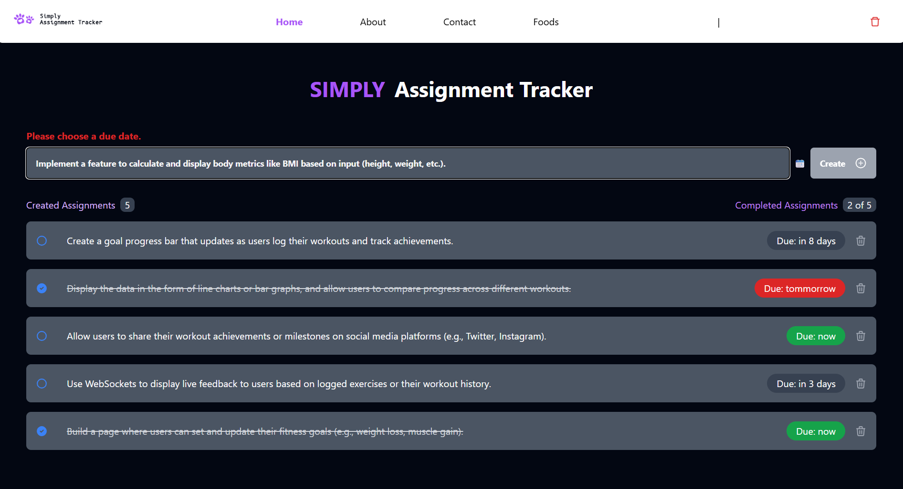

<section id="simply-assignment-tracker" class="bg-light-gray py-20 font-sans text-rich-black">
    <div class="container mx-auto px-6">
        <!-- Section Header -->
        <header class="text-center mb-12">
            <h2 class="text-3xl md:text-4xl font-extrabold text-lemon-blue">Simply Assignment Tracker</h2>
            <div class="w-24 h-1 bg-lemon-blue mx-auto mt-2 rounded-full"></div>
        </header>

        <!-- Featured Image and Content -->
        <div class="grid grid-cols-1 lg:grid-cols-2 gap-12 items-center">
            <!-- Image Column -->
            <div class="flex justify-center">
                
            </div>

            <!-- Content Column -->
            <div class="text-base md:text-lg text-gray-700 space-y-4">
                <h3 class="text-2xl font-semibold text-center text-dark-blue">
                    Behind the Development: Simply Assignment Tracker
                </h3>

                <p>
                    Simply Assignment Tracker is an intuitive app built to help you manage assignments and tasks efficiently. It uses React, Zustand, and Vite to provide a smooth and seamless experience for tracking deadlines and organizing tasks.
                </p>

                <p>
                    The app allows you to quickly add assignments, set due dates, and track progress. It automatically saves data using local storage, so you never lose your assignments. You can also filter and mark tasks as completed with ease.
                </p>

                <p>
                    This project enhanced my skills in state management with Zustand, routing with TanStack Router, and working with real-time data updates. The user-friendly design, powered by Tailwind CSS, ensures a responsive and clean layout.
                </p>

                <!-- Action Button -->
                <div class="flex justify-center">
                    <a href="https://simply-at.netlify.app" target="_blank">
                        <button class="bg-lemon-blue text-white py-2 px-8 rounded-2xl font-semibold shadow-md hover:shadow-lg transition-all">
                            Try It Now
                        </button>
                    </a>
                </div>
            </div>
        </div>
    </div>
</section>
